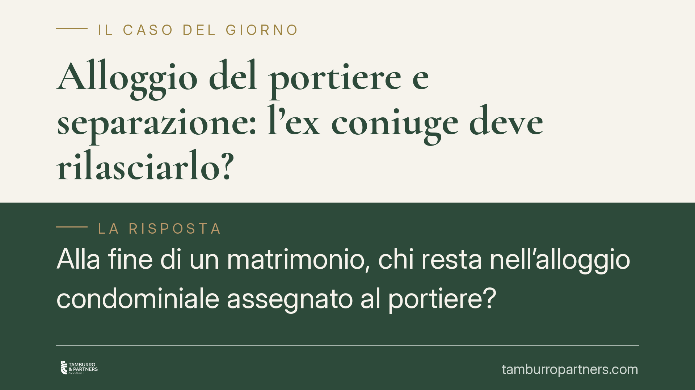

Alloggio del portiere e separazione: l'ex coniuge deve rilasciarlo?
Alla fine di un matrimonio, chi resta nell'alloggio condominiale assegnato al portiere? Una recente pronuncia di merito ribadisce un principio netto: quell'immobile è un bene di servizio legato al rapporto di lavoro, non la casa familiare in senso proprio. In assenza di un provvedimento di assegnazione, l'ex coniuge non ha titolo per restarvi e il portiere può agire per il rilascio.

Il caso
Un portiere, dopo la separazione dalla moglie, chiede la restituzione dell'alloggio di servizio situato nello stabile in cui presta lavoro. L'ex coniuge vi era rimasta a vivere. Il giudice di merito ha accolto la domanda del portiere, qualificando l'immobile come bene funzionale al rapporto di lavoro e non come casa familiare autonomamente tutelata.
Una precisazione doverosa sulla fonte: la pronuncia è di primo grado e, alla data di questo contributo, non risulta ancora disponibile in forma ufficiale e verificabile con indicazione certa di sezione, numero e data di deposito. Trattiamo quindi il principio giuridico, non il dettaglio processuale della singola sentenza, che riportiamo come orientamento e non come precedente consolidato.
Inquadramento normativo
Il punto di partenza è l'art. 337-sexies c.c., che disciplina l'assegnazione della casa familiare in sede di separazione o divorzio. La norma tutela l'interesse dei figli e presuppone che l'immobile sia stato effettivamente il centro degli affetti e delle abitudini domestiche della famiglia. L'assegnazione richiede però un provvedimento del giudice: non opera in via automatica.
L'alloggio del portiere ha natura diversa. Si tratta di un alloggio di servizio, concesso in godimento in ragione del rapporto di lavoro con il condominio. La disciplina lavoristica di categoria — il CCNL per i dipendenti da proprietari di fabbricati (portieri e custodi) — prevede spesso che il godimento dell'alloggio costituisca parte del trattamento economico, strettamente collegato allo svolgimento delle mansioni.
Da qui la conseguenza decisiva: il diritto a occupare l'immobile sorge, e si giustifica, solo finché sussiste il rapporto di lavoro. Cessato il rapporto — per dimissioni, licenziamento o pensionamento — viene meno anche il titolo al godimento (principio riconducibile alla natura accessoria della prestazione rispetto all'obbligazione lavorativa, artt. 2094 e 2103 c.c.). Va quindi verificato in concreto se, al momento della domanda, il rapporto fosse ancora in essere: se lo era, il titolare del godimento resta il portiere; se era cessato, il tema si sposta sul rilascio verso il condominio.
Perché l'art. 337-sexies non salva l'ex coniuge
L'assegnazione della casa familiare può riguardare solo un immobile di cui la famiglia disponga a titolo proprio (proprietà, locazione, comodato) o comunque a un titolo trasferibile al coniuge affidatario. L'alloggio di servizio, invece, non è nella disponibilità della famiglia: è nella disponibilità del condominio e viene concesso *intuitu personae* al lavoratore.
Manca, in altre parole, l'oggetto assegnabile. L'ex coniuge non vanta un diritto autonomo sull'immobile, ma una posizione di mero godimento derivata da quella del portiere. Venuta meno la convivenza, e in assenza di un provvedimento giudiziale di assegnazione, cade anche il presupposto della permanenza.
È inoltre il portiere — non il condominio — a essere legittimato all'azione personale di restituzione nei confronti dell'ex coniuge, in quanto titolare del rapporto da cui deriva il godimento.
Implicazioni pratiche
Per il condominio. L'alloggio resta un bene condominiale destinato al servizio di portierato. Il condominio ha interesse a che l'immobile sia occupato solo dal dipendente in servizio: eventuali occupazioni ultronee vanno monitorate, soprattutto in caso di cessazione del rapporto.
Per il portiere. Conserva il diritto al godimento finché dura il rapporto di lavoro e può agire in via personale per riottenere la disponibilità dell'immobile occupato dall'ex coniuge. Attenzione però: se il rapporto cessa, il rilascio dovrà avvenire a favore del condominio.
Per l'ex coniuge. La posizione è debole quando manca un provvedimento di assegnazione. Le tutele economiche e abitative vanno cercate su altro piano — assegno di mantenimento, contributo casa — e non nella pretesa di restare in un immobile privo di titolo.
Cosa fare in concreto
- Verificate lo stato del rapporto di lavoro del portiere alla data rilevante: è la circostanza che determina chi ha titolo al godimento.
- Consultate il CCNL applicabile e il contratto individuale per capire come è disciplinato l'alloggio di servizio.
- Controllate se esiste un provvedimento di assegnazione della casa familiare ex art. 337-sexies c.c.: senza di esso la posizione dell'ex coniuge è priva di base.
- È opportuno un esame preliminare del titolo prima di avviare o resistere a un'azione di rilascio, così da individuare il soggetto legittimato e il fondamento della pretesa.
- Distinguete i piani: separazione e rapporto di lavoro seguono regole diverse; confonderli espone a errori strategici.
Disclaimer
Contributo informativo a cura di Tamburro & Partners Avvocati - Avv. Giuseppe Tamburro. Non costituisce parere legale.
Ogni famiglia ha il suo equilibrio.
Separazione, divorzio, affidamento, assegno: se vuoi un confronto riservato su una specifica situazione, scrivi allo studio. Ti rispondiamo entro un giorno lavorativo.